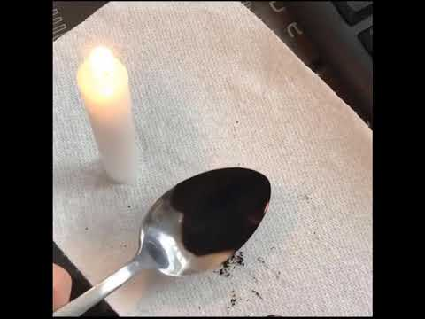

Lamp Black Ink

Description
This a a deep black ink. The process for making it is simple, but time consuming and requires a good dose of patience. Gum Arabic binds the pigment of the lampblack into paper when you write or draw with our ink. It is also used on postage stamps, envelopes, shoe polish, watercolour paints, and various sweets.
Ingredients
- A taper candle and holder (use a white candle for any purpose but if you are creating the ink for a specific spell, use a corresponding colour of candle).
- A metal spoon (preferably a new spoon set aside for this purpose)
- A bowl
- A piece of firm white card
- Distilled or spring water
- Gum Arabic powder
- A cloth that can get dirty
- Small sterilized glass bottle with tight-fitting lid
- A little patience!
Steps
- Cover the surface you are working on with the cloth.
- Place the candle in the holder and light the candle; place the bowl beside it, on top the cloth.
- Hold the back spoon just above the flame, so it is almost touching but not quite, for 30-60 seconds. You will notice a black coating has covered the back of the spoon--this is the treasure!
- With the card, very carefully scrape the sooty substance off of the spoon and into the bowl. Do this slowly and deep into the bowl as it has a tendency to flutter away.
- Now, this is where your patience is needed! Repeat steps 1-4 for about an hour, until you have a wealth of sooty goodness in the bowl. If the spoon begins to get too hot to handle, either have a break to let it cool or put on a glove.
- You've acquired the treasure, now it's time to make the riches.
- Warm the distilled water and add drop-by-drop to the bowl of lampblack. After every 2 or 3 drops, mix the ink with a clean finger or the spoon. Stop adding water when the ink is black as obsidian. If it too watery just make some more soot and add it in.
- Add in a small amount of gum Arabic at a time, stirring, until the mixture resembles the kind of ink you can buy in art and stationary shops.
- Pour your Lampblack Ink into a sterilised glass jar or bottle (to sterilise; wash glass in a dishwasher or place in a hot oven for 5-10 minutes.)
- Store in a cool, dry place away from direct sunlight and children!